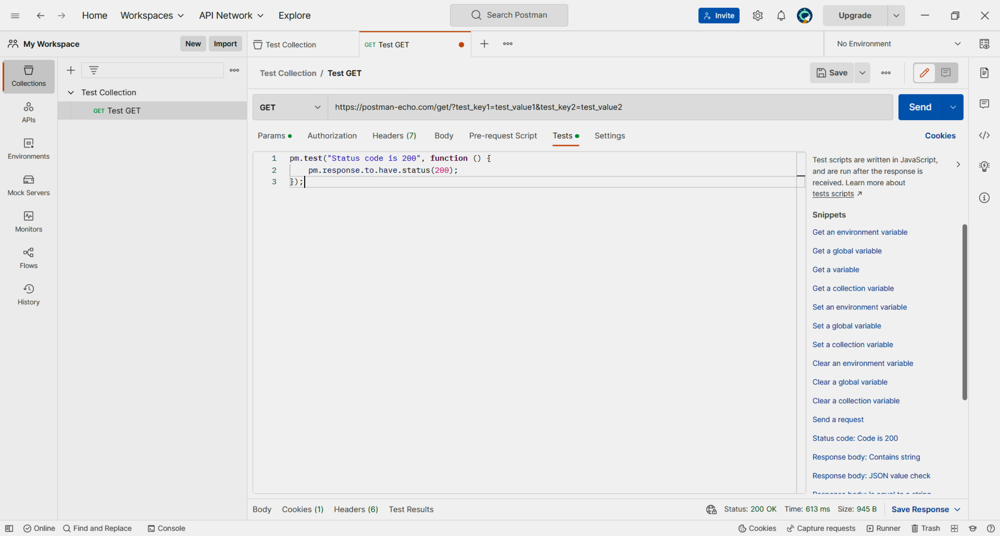

Lo
más interesante aquí es la barra lateral de la izquierda. Sus siete
pestañas corresponden a las principales herramientas de Postman.
Lo
más interesante aquí es la barra lateral de la izquierda. Sus siete
pestañas corresponden a las principales herramientas de Postman.¿Para qué usamos Clases en Python?
Una clase es una plantilla con la que conviene describir objetos del mismo tipo. Una clase contiene las propiedades, reglas de creación y comportamiento de un objeto.
Un objeto es una instancia creada en base a una plantilla.
Un atributo es un campo que almacena un valor. Contiene las propiedades de un objeto.
Un método es una función asociada a una clase. Describe el comportamiento o acciones de un objeto.
Un ejemplo de clase — los coches, sus atributos serán: color, marca del coche, número de matrícula.
Los métodos pueden ser: seguir recto, girar, detenerse.
Un objeto de la clase "Coches" puede ser un coche concreto, por ejemplo un Renault Logan blanco con el número M123PT.
¿Para qué sirven las clases?
Las clases ayudan a describir breve y claramente los objetos y su comportamiento, independientemente del código principal del programa.
Luego, en el código principal, puedes simplemente crear objetos basados en clases y trabajar con ellos, sin describir sus propiedades y comportamiento.
Este enfoque hace que el código sea más legible y comprensible y también ayuda a evitar muchos errores y fallos.
Sintaxis y reglas para crear clases.
Para crear una clase, utilice la construcción class ClassName. El nombre de la clase siempre está en mayúscula.
Cada clase debe contener un método __init__; con este método, se crea un objeto de clase. Este método inicializa los atributos de clase:
class Person: # declaraciones de clase def __init__(self, name, age): # Método de inicialización self.age = age # Establecer valores de atributos self.name = name |
Los métodos integrados también se pueden utilizar en las clases; se denominan métodos mágicos. Los métodos mágicos son métodos reservados responsables del comportamiento de un objeto.
|
Inicializando un objeto |
|
Conversión a cadena str(obj) |
|
|
|
Operador de acceso al elemento | some_dict['elemento'] | |
Ejemplo:
class Person: # declaraciones de clase def __init__(self, name, age): # Método de inicialización self.age = age # Establecer valores de atributos self.name = name
def __str__(self):
return f"{self.name} is {self.age} years old"
person = Person('John', 20) # Creando una instancia
person.name = 'James' # Уestablecer el valor del atributo
print(person)
|
Herencia de clases en Python
La herencia es el proceso por el cual una clase hereda los atributos y métodos de otra. La clase cuyas propiedades y métodos se heredan se llama Padre o Superclase. Y la clase cuyas propiedades se heredan es una clase descendiente o Subclase.
En lugar de empezar desde cero, puedes crear una clase basada en una existente. Especifique la clase principal entre paréntesis después del nombre de la nueva clase.
Una clase descendiente hereda los atributos de su clase padre. Puede utilizar estos atributos como si estuvieran definidos en la clase descendiente. Puede anular los miembros y métodos de datos de los padres.
Sintaxis de herencia de clases
Las clases herederas se declaran de la misma manera que las clases principales. Sólo que la lista de clases heredadas se indica después del nombre de la clase.
|
¿Qué método se ejecuta automáticamente
cuando se crea una instancia de una clase?
En programación orientada a objetos, un constructor de clases es un método que se llama automáticamente cuando se crean objetos. También se le puede llamar constructor de objetos de clase. El nombre de dicho método suele estar regulado por la sintaxis de un lenguaje de programación específico. Entonces, en Java, el nombre del constructor de la clase es el mismo que el nombre de la clase misma. En Python, el papel del constructor lo desempeña el método __init__.
En Python, la presencia de pares de guiones bajos iniciales y finales en el nombre de un método indica que pertenece al grupo de métodos de sobrecarga de operadores. Si dichos métodos se definen en una clase, entonces los objetos pueden participar en operaciones como suma, resta, ser llamados como funciones, etc.
En este caso, no es necesario llamar a los métodos de sobrecarga de operadores por su nombre. El desafío para ellos es el hecho mismo de la participación de un objeto en una determinada operación. En el caso de un constructor de clases, esta es la operación de crear un objeto. Dado que el objeto se crea en el momento en que se llama a la clase por su nombre, el método __init__ se llama en este momento.
La necesidad de constructores se debe al hecho de que a menudo los objetos deben tener sus propias propiedades de inmediato. Sea una clase Person, cuyos objetos deben tener nombre y apellido. Si la clase se describe así
|
entonces es posible crear un objeto sin campos. Para establecer el nombre y el apellido, se debe llamar al método set_name por separado:
|
A su vez, el constructor de la clase no te permitirá crear un objeto sin los campos obligatorios:
|
Aquí, al llamar a una clase, se pasan entre paréntesis los valores que se asignarán a los parámetros del método __init__. Su primer parámetro es self, una referencia al propio objeto recién creado.
Ahora, si intentamos crear un objeto sin pasarle nada al constructor, se lanzará una excepción y el objeto no se creará:
|
Sin embargo, hay ocasiones en las que es necesario permitir que se cree un objeto incluso si no se pasan datos al constructor. En este caso, los parámetros del constructor de la clase se establecen en los valores predeterminados:
|
Conclusión:
|
Si se llama a una clase sin valores entre paréntesis, se utilizarán sus valores predeterminados para los parámetros. Sin embargo, todos los objetos tendrán campos de width y height.
Además, el constructor no necesita tomar ningún parámetro
distinto del self.
En otros
lenguajes de programación, por ejemplo en Java, las clases pueden
contener varios constructores, que se diferencian entre sí por el
número de parámetros y, posiblemente, también por su tipo. Cuando
se crea un objeto, se activa el constructor cuyo número y tipos de
parámetros coinciden con el número y tipos de argumentos pasados al
constructor.
En Python, puedes crear varios métodos __init__ en una clase, pero sólo el último permanecerá "funcionando". Anulará los definidos previamente. Por lo tanto, en Python, solo se usa un constructor en las clases y la variabilidad del número de argumentos pasados se ajusta asignando valores predeterminados.
¿Cuáles son los tres verbos de API?
Los verbos HTTP forman la mayor parte de la "interfaz única" que limita y proporciona la capacidad de realizar acciones en el sustantivo del recurso. Los verbos HTTP principales o más utilizados (o métodos, como a veces se les llama) son POST, GET, PUT y DELETE. Corresponden a las operaciones de crear, actualizar y eliminar (o colectivamente, CRUD). También hay otros verbos que se utilizan con menos frecuencia. Los métodos menos utilizados incluyen OPTIONS y HEAD.
El método HTTP GET se utiliza para obtener (o leer) una representación de un recurso. En el caso de una dirección "correcta" (o sin errores), GET devuelve una representación XML o JSON del recurso combinada con un código de estado HTTP de 200 (OK). Si hay errores, generalmente se devuelve un código 404 (NOT FOUND) o 400 (BAD REQUEST).
Según la especificación HTTP, las solicitudes GET (así como HEAD) se utilizan solo para leer datos, sin cambiarlos. Por lo tanto, siempre que se cumpla este acuerdo, se consideran seguros. Es decir, se pueden utilizar sin riesgo de cambiar los datos, independientemente de si los datos se recibieron una vez, 10 veces o nunca. Las solicitudes GET (así como HEAD) son idempotentes (idénticas), lo que significa obtener datos idénticos cuando se utilizan las mismas solicitudes (tanto con una sola solicitud como con múltiples solicitudes).
No debe utilizar GET para operaciones inseguras con datos; para esta solicitud, no deben modificarse.
Ejemplos:
El método PUT se utiliza normalmente para brindar la capacidad de actualizar un recurso. El cuerpo de la solicitud al enviar una solicitud PUT a un recurso URI existente debe contener los datos actualizados del recurso original (ya sea en su totalidad o solo la parte que se actualiza).
Además, PUT se puede utilizar para crear un recurso en el caso de que el cliente elija el identificador del recurso en lugar del servidor. O, parafraseando, al enviar una solicitud PUT a una dirección que contiene un identificador de recurso inexistente. Nuevamente, vale la pena recordar que el cuerpo de la solicitud debe ser una modificación del recurso original. Mucha gente lo encuentra confuso e incomprensible. En consecuencia, esta característica del método PUT debe utilizarse con precaución. Sí, incluso si es absolutamente necesario.
Para crear nuevas instancias de recursos, es preferible utilizar una solicitud POST. En este caso, al crear una instancia, se proporcionará el identificador de instancia de recurso correcto en los datos de instancia devueltos.
Una actualización exitosa mediante una solicitud PUT devuelve un código de 200 (o 204 si no se envió ningún contenido en el cuerpo de la respuesta). Si se utiliza PUT para crear una instancia, normalmente devuelve el código HTTP 201 tras una creación exitosa. Es opcional devolver datos en respuesta a una solicitud. Tampoco es necesario devolver una referencia a la instancia del recurso a través del encabezado "Ubicación", debido a que el cliente ya tiene el identificador de la instancia del recurso.
PUT no es una operación segura porque provoca la modificación (o creación) de instancias de recursos en el lado del servidor, pero el método es idempotente. En otras palabras, crear o actualizar un recurso enviando una solicitud PUT: el recurso no desaparecerá, se ubicará en el mismo lugar donde estaba la primera vez que se accedió y, además, la ejecución repetida de la misma solicitud PUT no cambiar el estado general del sistema (excepto la primera vez, pero esto generalmente se omite de consideración).
Si se utiliza una solicitud PUT para aumentar el recuento de vistas de un recurso específico, esta solicitud ya no se considera idempotente. A veces esto sucede y se considera suficiente documentar el hecho de que la llamada no es idempotente. Sin embargo, se recomienda encarecidamente que la solicitud PUT se mantenga idempotente.
Ejemplos:
Una solicitud PATCH se utiliza para **modificar** un recurso. Una solicitud PATCH debe contener solo los datos mutables del recurso, no todos sus datos.
Esto es similar a cómo funciona una solicitud PUT, pero el cuerpo de la solicitud contiene un conjunto de instrucciones que describen cómo se debe cambiar un recurso ubicado en el servidor para formar una nueva versión. Esto significa que el cuerpo de la solicitud PATCH debe contener no solo cambios en el recurso, sino también una descripción en un lenguaje de parche como JSON Patch o XML Patch.
Una solicitud PATCH no es segura ni idempotente. Sin embargo, una solicitud PATCH se puede diseñar para que sea idempotente, lo que a su vez ayuda a prevenir las consecuencias negativas de colisiones entre dos solicitudes PATCH al mismo recurso en el mismo período de tiempo. Las colisiones de múltiples solicitudes PATCH pueden ser más peligrosas que las colisiones de solicitudes PUT porque algunos formatos de cambio deben ejecutarse desde un punto de referencia conocido o el recurso se dañará. Los clientes que utilizan este tipo de cambio deben utilizar una solicitud condicional para verificar que el recurso ha cambiado desde la última vez que el cliente accedió a él. Por ejemplo, un cliente puede utilizar una ETag en el encabezado If-Match de la propia solicitud PATCH.
Ejemplos:
` La solicitud POST se utiliza con mayor frecuencia para crear nuevos recursos. En la práctica, se utiliza para crear recursos anidados. En otras palabras, al crear un nuevo recurso, se envía una solicitud POST al recurso principal y, por lo tanto, el servicio asume la responsabilidad de establecer una conexión entre el recurso creado y el recurso principal, asignar una ID al nuevo recurso, etc.
Si un recurso se crea correctamente, se devuelve el código HTTP 201 y la dirección del recurso creado también se transmite en el encabezado "Ubicación".
POST no es una solicitud segura o idempotente. Por tanto, se recomienda su uso para consultas no idempotentes. La ejecución de solicitudes POST idénticas da como resultado que se proporcionen datos muy similares, pero no idénticos.
Ejemplos:
La solicitud DELETE es extremadamente fácil de entender. Se utiliza para eliminar un recurso identificado por un URI (ID) específico.
Tras una eliminación exitosa, se devuelve un código HTTP 200 (OK), junto con un cuerpo de respuesta que contiene datos del recurso eliminado (afecta negativamente al ahorro de tráfico) o respuestas empaquetadas. También es posible utilizar el código HTTP 204 (NO CONTENT) sin un cuerpo de respuesta.
Según la especificación HTTP, una solicitud DELETE es idempotente. Si emite una solicitud DELETE a un recurso, se elimina. Una solicitud DELETE repetida a un recurso terminará de la misma manera: el recurso ha sido eliminado. Si se utiliza una solicitud DELETE para disminuir un contador, la declaración DELETE no es idempotente. Utilice POST para operaciones no idempotentes.
Sin embargo, hay una advertencia sobre la idempotencia de DELETE. Una solicitud DELETE repetida a un recurso suele ir acompañada de un código HTTP 404 (NOT FOUND) debido a que el recurso ya se ha eliminado (por ejemplo, de una base de datos) y ya no está disponible. Esto hace que la operación DELETE no sea idempotente, pero es un compromiso común en caso de que el recurso se haya eliminado de la base de datos en lugar de marcarlo como eliminado.
Ejemplos:
¿Es MongoDB una base de datos SQL o NoSQL?
¿Qué es MongoDB?
La base de datos MongoDB es un sistema de gestión de bases de datos NoSQL de código abierto y multiplataforma. Está diseñado para almacenar y gestionar grandes volúmenes de datos de forma flexible y escalable. Una de las características clave de MongoDB es su modelo de datos orientado a documentos, que almacena datos como documentos tipo JSON con esquemas opcionales. Esto proporciona una mayor flexibilidad y acelera el desarrollo porque el esquema se puede cambiar fácilmente sin la necesidad de una costosa migración de datos.
Desde el punto de vista técnico, MongoDB utiliza una arquitectura
distribuida donde los datos se dividen en varios servidores o
fragmentos. Esto permite el escalamiento horizontal, lo que significa
que la base de datos puede manejar volúmenes de datos cada vez
mayores y leer y escribir datos sin la necesidad de costosas
actualizaciones de hardware. MongoDB también incluye varias
funciones integradas para alta disponibilidad, como conmutación por
error automática y conjuntos de réplicas. Esto garantiza que la
base de datos permanezca disponible durante fallas de hardware u
otras interrupciones.
MongoDB es una herramienta poderosa y
flexible para almacenar y administrar grandes cantidades de datos en
aplicaciones modernas centradas en datos. Su modelo de datos
orientado a documentos y su arquitectura distribuida lo hacen ideal
para muchos casos de uso, desde análisis en tiempo real y gestión
de contenido hasta aplicaciones de comercio electrónico y IoT.
¿Cómo funciona?
MongoDB funciona almacenando datos en forma de documentos, que son
similares a los objetos JSON. Estos documentos están organizados en
colecciones, similares a las tablas de una base de datos relacional
tradicional. Cada documento de una colección puede tener una
estructura diferente, lo que permite una mayor flexibilidad en los
tipos de datos que se pueden almacenar. Por ejemplo, un documento
puede contener información sobre un usuario, incluido su nombre,
correo electrónico y dirección, mientras que otro puede contener
información sobre un producto, incluido su nombre, precio y
descripción.
Para almacenar y recuperar datos en MongoDB, los
desarrolladores pueden utilizar el lenguaje de consulta de MongoDB,
que es similar a SQL. Las consultas se pueden utilizar para buscar
documentos específicos en una colección, actualizar o eliminar
documentos y realizar otras tareas de gestión de datos.
MongoDB también incluye varias funciones integradas de indexación, fragmentación y replicación de datos para mejorar el rendimiento y la alta disponibilidad. Los índices se pueden utilizar para encontrar rápidamente documentos específicos en una colección, mientras que la fragmentación permite el escalado horizontal al dividir los datos en varios servidores. La replicación, por otro lado, crea copias de datos en múltiples servidores para garantizar que los datos estén siempre disponibles y puedan restaurarse en caso de falla.
Características de MongoDB
MongoDB tiene una serie de características que lo hacen popular entre los desarrolladores que crean aplicaciones modernas basadas en datos. Algunas de las características clave incluyen:
Modelo de datos orientado a documentos: MongoDB almacena datos como documentos JSON, lo que proporciona mayor flexibilidad y acelera el desarrollo.
Escalabilidad: MongoDB utiliza una arquitectura distribuida y admite escalamiento horizontal, lo que significa que puede manejar volúmenes de datos crecientes y cargas de trabajo de lectura y escritura sin la necesidad de costosas actualizaciones de hardware.
Alta disponibilidad: MongoDB incluye funciones integradas de conmutación por error automática y conjuntos de réplicas para garantizar la disponibilidad de la base de datos durante fallas de hardware u otras interrupciones.
Indexación: MongoDB admite la indexación para mejorar el rendimiento de las consultas y las búsquedas, lo que hace que sea más rápido y sencillo encontrar documentos específicos en una colección.
Agregación: MongoDB proporciona herramientas integradas para la agregación de datos, lo que permite a los desarrolladores analizar y manipular fácilmente grandes volúmenes de datos.
Amplio soporte de lenguajes: MongoDB se puede utilizar con muchos lenguajes de programación, incluidos JavaScript, Python, Java, C++ y más.
Estas características hacen de MongoDB una herramienta poderosa y
flexible para almacenar y administrar grandes cantidades de datos en
aplicaciones modernas basadas en datos.
¿Por qué utilizar MongoDB?
A continuación se presentan algunas razones adicionales por las que los desarrolladores podrían decidir utilizar MongoDB en sus aplicaciones:
Una de las características únicas de MongoDB es su modelo de datos orientado a documentos, que almacena datos como documentos tipo JSON con esquemas opcionales. Esto permite a los desarrolladores almacenar y recuperar datos de manera más flexible y rápida que las bases de datos relacionales tradicionales porque el esquema se puede cambiar fácilmente sin la necesidad de una costosa migración de datos.
MongoDB también es conocido por su capacidad para manejar grandes volúmenes de datos y cargas de trabajo de lectura y escritura. Su arquitectura distribuida y soporte para escalamiento horizontal le permiten escalar sin problemas a medida que aumenta el volumen y la complejidad de los datos. Esto lo convierte en una buena opción para aplicaciones que necesitan procesar y almacenar datos de muchos usuarios o dispositivos.
Además de la flexibilidad y la escalabilidad, MongoDB tiene
funciones integradas de alta disponibilidad que incluyen conmutación
por error automática y conjuntos de réplicas. Esto garantiza que la
base de datos permanezca disponible incluso durante fallas de
hardware u otras interrupciones, lo que la convierte en una opción
confiable para aplicaciones de misión crítica.
Finalmente,
MongoDB tiene una sólida comunidad de usuarios y desarrolladores que
brindan muchos recursos y soporte a quienes trabajan con la base de
datos. Esto puede resultar especialmente útil para los
desarrolladores que recién comienzan a utilizar MongoDB o que
necesitan temas más avanzados.
Diferencia entre MongoDB y RDBMS
MongoDB y RDBMS (Sistema de gestión de bases de datos relacionales) son dos bases de datos diferentes que se utilizan para almacenar y gestionar datos. Aquí hay algunas diferencias clave entre ellos:
Modelo de datos: la principal diferencia entre MongoDB y RDBMS es cómo almacenan y organizan los datos. MongoDB utiliza un modelo de datos orientado a documentos que almacena datos en documentos tipo JSON con esquemas opcionales. Por otro lado, RDBMS utiliza un modelo de datos tabular en el que los datos se almacenan en tablas con esquemas fijos.
Escalabilidad: MongoDB está estructurado para manejar volúmenes de datos crecientes y cargas de trabajo de lectura/escritura sin la necesidad de costosas actualizaciones de hardware, lo que le permite escalar de manera eficiente a medida que crece la demanda. Un RDBMS también puede escalarse, pero esto normalmente requiere configuraciones más complejas y puede requerir el uso de hardware adicional.
Indexación: tanto MongoDB como RDBMS admiten la indexación para mejorar el rendimiento de las consultas y las búsquedas. Sin embargo, los tipos de índices admitidos y cómo se implementan pueden variar.
Transacciones: RDBMS generalmente admite transacciones, que permiten que múltiples operaciones se traten como una sola unidad de trabajo y se confirmen o reviertan como una sola unidad. MongoDB no admite transacciones de la misma manera, pero proporciona algunas alternativas para implementar operaciones atómicas.
Soporte de lenguajes: Tanto MongoDB como RDBMS se pueden utilizar con una amplia gama de lenguajes de programación. Sin embargo, los idiomas específicos admitidos y la forma de utilizarlos pueden variar.
Si bien MongoDB y RDBMS son herramientas poderosas para almacenar y
administrar datos, tienen diferentes fortalezas y son más adecuadas
para diferentes aplicaciones.
En conclusión, MongoDB es
una popular base de datos NoSQL de código abierto que se utiliza
para almacenar y recuperar datos de manera flexible y escalable. Es
conocido por su capacidad para procesar grandes volúmenes de datos y
trabajar con una amplia gama de aplicaciones y lenguajes de
programación. Las características clave de MongoDB incluyen un
modelo de datos orientado a documentos, escalabilidad, alta
disponibilidad, indexación, agregación y amplio soporte de idiomas.
MongoDB funciona almacenando datos en forma de documentos organizados en colecciones. Para almacenar y recuperar datos en MongoDB, los desarrolladores pueden utilizar el lenguaje de consulta MongoDB, que es similar a SQL. MongoDB también incluye varias funciones integradas de indexación, fragmentación y replicación de datos para mejorar el rendimiento y la alta disponibilidad. Hay varias razones por las que los desarrolladores eligen utilizar MongoDB en sus aplicaciones, incluida su flexibilidad, escalabilidad, alta disponibilidad, amplio soporte de idiomas y soporte de la comunidad.
Una de las herramientas que puede ayudar a los desarrolladores a crear aplicaciones es AppMaster. AppMaster es una plataforma sin código basada en la nube que simplifica el proceso de creación e implementación de aplicaciones al proporcionar una variedad de herramientas y servicios. Actualmente es compatible con PostgreSQL, AWS RDS PostgreSQL y AWS Aurora PostgreSQL, y se agregará soporte para MongoDB en el primer trimestre de 2023. Con AppMaster, los desarrolladores pueden centrarse en crear y mejorar sus aplicaciones en lugar de preocuparse por la infraestructura subyacente. MongoDB es una poderosa herramienta para almacenar y administrar datos, y AppMaster ayudará a los desarrolladores a crear e implementar aplicaciones de manera eficiente y rentable.
¿Qué es una API?
Las API son mecanismos que permiten que dos componentes de
software se comuniquen entre sí mediante un conjunto de definiciones
y protocolos. Por ejemplo, un sistema de software de servicio
meteorológico contiene datos meteorológicos diarios. La aplicación
meteorológica del teléfono "se comunica" con este sistema
a través de una API y muestra actualizaciones meteorológicas
diarias en el teléfono.
¿Qué significa API?
API: interfaz de programación de aplicaciones, que significa interfaz de programación de aplicaciones. En el contexto de una API, la palabra "aplicación" se refiere a cualquier software con una función específica. Se puede considerar una interfaz como un contrato de servicio entre dos aplicaciones. Este contrato define cómo interactúan entre sí mediante solicitudes y respuestas. La documentación de la API contiene información sobre cómo los desarrolladores deben estructurar estas solicitudes y respuestas.
¿Cómo
funcionan las API?
La arquitectura API generalmente se explica desde la perspectiva del cliente y del servidor. La aplicación que envía la solicitud se llama cliente y la aplicación que envía la respuesta se llama servidor. Entonces, en el ejemplo del clima, la base de datos del servicio es el servidor y la aplicación móvil es el cliente.
Hay cuatro formas diferentes en que funcionan las
API, según cuándo y por qué se crearon.
SOAP
API
SOAP: Simple Object Access Protocol, es decir, un protocolo simple para acceder a objetos. El cliente y el servidor intercambian mensajes mediante XML. Esta es una API menos flexible que fue más popular en el pasado.
RPC API
Estas API se denominan sistemas de llamada a
procedimientos remotos. El cliente ejecuta una función (o
procedimiento) en el servidor y el servidor envía el resultado al
cliente.
Websocket API
Websocket API es otro desarrollo de API web moderno que utiliza objetos JSON para transferir datos. La Websocket API admite la comunicación bidireccional entre las aplicaciones cliente y el servidor. El servidor puede enviar mensajes de devolución de llamada a los clientes conectados, lo que lo hace más eficiente que la REST API.
REST API
Estas son las API más populares y flexibles de Internet en la actualidad. El cliente envía solicitudes al servidor en forma de datos. El servidor utiliza esta entrada del cliente para ejecutar funciones internas y devuelve la salida al cliente.
REST significa Representational State Transfer, es decir, transferencia de un estado representativo. REST define un conjunto de funciones como GET, PUT, DELETE, etc. que los clientes pueden usar para acceder a los datos del servidor. Los clientes y servidores intercambian datos mediante el protocolo HTTP.
La característica principal de la REST API es que dichas transferencias no tienen estado. Sin estado significa que los servidores no conservan los datos del cliente entre solicitudes. Las solicitudes de los clientes al servidor son similares a las URL que ingresa en un navegador para visitar un sitio web. La respuesta del servidor son datos simples sin la visualización gráfica típica de una página web.
¿Qué es la
API web?
Web API o Web Service API es una interfaz de procesamiento de aplicaciones entre un servidor web y un navegador web. Todos los servicios web son API, pero no todas las API son servicios web. REST API es un tipo especial de API web que utiliza el estilo arquitectónico estándar descrito anteriormente.
Existen varios términos que se refieren a las API, como las API de Java o las API de servicios, porque históricamente las API se crearon antes de la World Wide Web. Las API web modernas son REST API y los términos se pueden usar indistintamente.
¿Qué son las
integraciones API?
Las integraciones API son componentes de software que actualizan automáticamente los datos entre clientes y servidores. Algunos ejemplos de integraciones API son la sincronización automática de datos a la nube desde la galería de imágenes de un teléfono o la sincronización automática de la hora y fecha de una computadora portátil al cambiar de zona horaria. Las organizaciones también pueden utilizarlos para automatizar de manera eficiente muchas funciones del sistema.
¿Cuáles son los beneficios de la REST API?
REST API tiene cuatro ventajas principales.
1. Integración
Las API se utilizan para integrar nuevas aplicaciones con sistemas de software existentes. Esto aumenta la velocidad de desarrollo porque no es necesario escribir cada función desde cero. La API se puede utilizar para mejorar el código existente.
2. Innovación
Industrias enteras pueden cambiar con la llegada de una nueva
aplicación. Las empresas deben responder rápidamente y apoyar el
rápido despliegue de servicios innovadores. Pueden hacerlo
realizando cambios a nivel de API sin tener que reescribir todo el
código.
3. Expansión
Las API brindan a las empresas una oportunidad única de satisfacer las necesidades de sus clientes a través de múltiples plataformas. Por ejemplo, Maps API le permite integrar información de mapas en sitios web, Android, iOS, etc. Cualquier empresa puede proporcionar acceso similar a sus bases de datos internas mediante API gratuitas o de pago.
4.Facilidad de mantenimiento
La API actúa como puerta de enlace entre dos sistemas. Cada sistema debe realizar cambios internos para que la API no se vea afectada. De esta manera, cualquier cambio de código futuro por parte de una parte no afectará a la otra parte.
¿Qué tipos de
API existen?
Las API se clasifican tanto por arquitectura como por alcance.
API privadas
Estas son API internas de organizaciones que se utilizan únicamente para conectar sistemas y datos dentro de una empresa.
API públicas
Esta es una API pública y cualquier persona puede utilizarla. Estos tipos de API pueden (pero no necesariamente) tener cierta autorización y costo asociado.
API de socios
Estas API solo están disponibles para desarrolladores externos autorizados para facilitar las asociaciones entre empresas.
API compuestas
Estas API combinan dos o más API diferentes para resolver requisitos o comportamientos complejos del sistema.
¿Qué es una dirección API y por qué es importante?
Las direcciones API son los puntos finales de interacción en un sistema de comunicación API. Estos incluyen URL de servidores, servicios y otras ubicaciones digitales específicas desde donde se envía y recibe información entre sistemas. Las direcciones API son fundamentales para las empresas por dos razones principales.
1. Seguridad
Las direcciones API hacen que el sistema sea vulnerable a ataques. El monitoreo de API es fundamental para prevenir el uso inadecuado.
2. Rendimiento
Las direcciones API, especialmente aquellas con mucho tráfico, pueden crear cuellos de botella y afectar el rendimiento del sistema.
¿Cómo proteger la REST API?
Todas las API deben protegerse mediante una autenticación y un seguimiento adecuados. Las dos formas principales de proteger la seguridad de una REST API son:
1. Tokens de autenticación
Se utilizan para autorizar a los usuarios a realizar una llamada API. Los tokens de autenticación verifican que los usuarios son quienes dicen ser y que tienen derechos de acceso para esa llamada API en particular. Por ejemplo, al iniciar sesión en un servidor de correo, el cliente de correo utiliza tokens de autenticación para un acceso seguro.
2. Claves API
Las claves API verifican el programa o aplicación que realiza la llamada API. Identifican la aplicación y garantizan que tenga los derechos de acceso necesarios para realizar una llamada API específica. Las claves API no son tan seguras como los tokens, pero permiten el monitoreo de API para recopilar datos de uso. Es posible que haya notado una larga cadena de caracteres y números en la URL de su navegador al visitar diferentes sitios web. Esta cadena representa la clave API que utiliza el sitio web para realizar llamadas API internas.
¿Cómo crear
una API?
Crear una API con la que otros desarrolladores quieran trabajar y en la que confíen requiere la debida diligencia y esfuerzo.
1. Plan API
Las especificaciones API como OpenAPI proporcionan un marco para el desarrollo de API. Es mejor pensar con anticipación en los diferentes casos de uso y asegurarse de que la API cumpla con los estándares de desarrollo de API actuales.
2. Desarrollo de API
Los desarrolladores de API crean prototipos de API utilizando código
repetitivo. Después de probar el prototipo, los desarrolladores
pueden personalizarlo según las especificaciones internas.
3.
Pruebas API
Las pruebas de API son similares a las pruebas de software y deben realizarse para evitar errores y defectos. Las herramientas de prueba de API se pueden utilizar para probar la resistencia de una API a los ataques cibernéticos.
4. Documentación API
Si bien las API se explican por sí mismas, la documentación de las
API actúa como guía para mejorar la usabilidad. Las API bien
documentadas que ofrecen una variedad de funcionalidades y casos de
uso tienden a ser más populares en la arquitectura orientada a
servicios.
5. Llevar API al mercado
Así como Amazon es un mercado minorista en línea, existen mercados de API para que los desarrolladores compren y vendan otras API.
¿Qué son las pruebas API?
Las estrategias de prueba de API son similares a otras metodologías de prueba de software. La atención se centra en validar las respuestas del servidor. Las pruebas de API incluyen los siguientes aspectos:
Realice múltiples solicitudes a direcciones API para realizar pruebas de rendimiento.
Redacción de pruebas unitarias para verificar la lógica empresarial y la corrección funcional.
Pruebas de seguridad mediante simulación de
ataques al sistema.
¿Cómo
escribir documentación API?
Producir documentación API completa es parte del proceso de gestión de API. La documentación de la API se puede generar automáticamente mediante herramientas o escribirse manualmente.
Escribir explicaciones en sencillo y fácil de leer. Los documentos generados por herramientas pueden volverse detallados y requerir edición.
Utilice ejemplos de código para explicar la funcionalidad.
Mantener registros para garantizar que sean precisos y estén actualizados.
Estilo de escritura orientado a principiantes
Cubriendo todos los problemas que la API puede resolver para los usuarios.
¿Cómo
utilizar la API?
Consulte a continuación los pasos para implementar la nueva API.
1. Obtener una clave API Esto se hace creando una cuenta verificada con el proveedor de API.
2. Instalación de un cliente API HTTP. Esta herramienta le permite estructurar fácilmente solicitudes API utilizando las claves API que recibe.
3. Si no tiene un cliente API, puede intentar estructurar la solicitud usted mismo en el navegador consultando la documentación de la API.
4. Una vez que se sienta cómodo con la nueva sintaxis de la API, podrá comenzar a usarla en el código.
¿Dónde puedo encontrar nuevas API?
Se pueden encontrar nuevas API web en los mercados de API y en los directorios de API. Los mercados de API son plataformas abiertas donde cualquiera puede poner a la venta API. Los directorios API son repositorios controlados y regulados por el propietario del directorio. Los desarrolladores de API experimentados pueden evaluar y probar una nueva API antes de agregarla a su catálogo.
¿Qué es una
puerta de enlace API?
API Gateway es una herramienta de gestión de API para clientes empresariales que ejecutan una amplia gama de servicios backend. Las puertas de enlace API suelen realizar tareas comunes, como autenticación de usuarios, estadísticas y control de tasas, que se aplican a todas las llamadas API.
¿Qué es
GraphQL?
GraphQL es un lenguaje de consulta diseñado específicamente para API. Prioriza proporcionar a los clientes exactamente los datos que solicitan y nada más. Este lenguaje está diseñado para hacer que las API sean rápidas, flexibles y fáciles de usar para los desarrolladores. Como alternativa a REST, GraphQL brinda a los desarrolladores de front-end la capacidad de consultar múltiples bases de datos, microservicios y API utilizando un único punto final GraphQL. Las organizaciones prefieren crear API utilizando GraphQL porque les ayuda a desarrollar aplicaciones más rápido.
AWS AppSync es un servicio totalmente administrado que simplifica el desarrollo de las API GraphQL al realizar el trabajo pesado de conectarse de forma segura a fuentes de datos como AWS DynamoDB, AWS Lambda, etc. AWS AppSync puede impulsar actualizaciones de datos en tiempo real a través de Websocket para millones de clientes. Para aplicaciones móviles y web, AppSync también proporciona acceso local a los datos cuando los dispositivos se desconectan. Una vez implementado, AWS AppSync aumenta o reduce automáticamente el motor de tiempo de ejecución de la API GraphQL según el volumen actual de solicitudes de API.
¿Qué es Postman?
Postman es un servicio para crear, probar, documentar, publicar y mantener API. Le permite crear colecciones de solicitudes para cualquier API, aplicarles diferentes entornos, configurar servidores simulados, escribir pruebas automáticas en JavaScript, analizar y visualizar los resultados de las solicitudes.
El programa admite diferentes tipos de arquitectura API: HTTP, REST, SOAP, GraphQL y WebSockets. Postman se usa ampliamente en Twitter, WhatsApp e Imgur, pero gracias a su conveniente interfaz gráfica, incluso un principiante puede entender la plataforma.
Cómo funciona Postmen
La entidad principal en Postman es el espacio de trabajo. Hay tres tipos de espacios de trabajo disponibles en la versión gratuita:
personal: visible sólo para el propietario;
equipo: visible solo para los miembros del equipo que trabajan en él;
público: disponible para todos.
La versión Pro le brinda acceso a espacios de trabajo
privados; dichos espacios no están disponibles para todos los
miembros del equipo, sino solo para los invitados. En las versiones
Enterprise, se agregan los de socios: son visibles no solo para los
miembros del equipo, sino también para los socios invitados.
Veamos en qué consiste el espacio de trabajo de Postman:
Lo
más interesante aquí es la barra lateral de la izquierda. Sus siete
pestañas corresponden a las principales herramientas de Postman.
Collections. Las colecciones de solicitudes de API se almacenan aquí. Se pueden combinar varias consultas dentro de una colección en carpetas.
APIs. En esta pestaña puede almacenar API completas: sus definiciones y colecciones.
Environments. Aquí se crean y almacenan los entornos en los que se encuentran las variables. El entorno activo se puede cambiar desde cualquier pestaña en la esquina superior derecha (donde está escrito Sin entorno en la captura de pantalla). Aquí también puede crear variables globales con las que puede trabajar en cualquier lugar, independientemente del entorno.
Mock Servers. Aquí puede crear servidores ficticios que imiten el comportamiento de los reales. Esto es útil para realizar pruebas.
Monitors. Los monitores le permiten visualizar y monitorear el funcionamiento de la API: monitorear el rendimiento, verificar la disponibilidad y el correcto funcionamiento del servidor según un cronograma y enviar notificaciones sobre fallas.
Flows. Esta es una herramienta con la que puedes configurar la lógica de las aplicaciones API en un editor visual;
History. El historial de todas las solicitudes enviadas se almacena aquí. Se pueden guardar, combinar en colecciones y crear documentación, monitores y servidores simulados para ellos.
Cómo utilizar
Postmen
Postman es una herramienta popular entre los evaluadores. Se puede utilizar para escribir solicitudes en cualquier API, incluso si no se utilizó Postman para crearlas.
La plataforma también tiene su propia API, en la que cualquiera puede probar el servicio y comprender cómo funcionan las solicitudes. Este servidor de eco devuelve al cliente los mismos datos que le envió.
Cómo crear una
colección
Para crear una colección, debe ir a la pestaña Collections y hacer clic en más. Aparecerá un elemento de New Collection en el lado izquierdo de la aplicación.
Cambiemos el nombre a Test Collection. Para hacer esto, haga clic en los tres puntos a la derecha de New Collection y seleccione Rename en la ventana emergente.
El espacio de trabajo de la colección tiene cinco pestañas:
Authorization. Aquí puede configurar el método de autorización y los parámetros que se utilizarán en cada solicitud dentro de la colección.
Pre-request Script. Aquí puede escribir un programa JavaScript que se ejecutará antes de enviar cada solicitud dentro de la colección. Postman ofrece fragmentos ya preparados para los algoritmos más comunes. Se pueden utilizar para evitar tener que escribir código desde cero.
Tests. Funciona como un script de solicitud previa, pero ejecuta el código una vez completada la solicitud. Esta es la sección que los evaluadores utilizan para probar la API. Aquí también hay fragmentos ya preparados.
Variables. Aquí puede crear una variable y asignarle un valor. Esta variable luego se puede utilizar especificando su nombre entre llaves dobles {{nombre de variable}}.
Runs. Postman le permite ejecutar consultas no individualmente, sino todas a la vez, dentro de una colección o carpeta. La sección Runs almacena información sobre dichas ejecuciones y los resultados de sus pruebas.
Cómo enviar una solicitud
Puede crear una solicitud de varias maneras:
Haga clic en el botón New en la esquina superior izquierda y seleccione el tipo de solicitud deseado;
Haga clic en el signo más en la barra de pestañas en la parte superior de la aplicación;
Haga clic en los tres puntos junto al nombre de la colección y seleccione Add request en el menú emergente.
Si elige el primer o segundo método, cuando guarde la
solicitud por primera vez, deberá especificar la colección en la
que se almacenará.
Escribamos una solicitud GET y llamémosla Test GET (los nombres de las solicitudes se pueden cambiar de la misma manera que las colecciones). Para esto:
Creemos una nueva solicitud.
Seleccionemos el método GET en él.
Ingresemos la URL: https://postman-echo.com/get/.
En la sección Params, ingrese las claves test_key1, test_key2 y los valores test_value1, test_value2, respectivamente.
Haga clic en el botón Send.
El servidor de eco nos devolvió un archivo JSON con los encabezados y argumentos que le pasamos (Postman envía algunos encabezados automáticamente).
Además, después de recibir una respuesta, puede ver por separado las cookies, los encabezados y los resultados de las pruebas, si los hubiera. Además, Postman indica el estado de la respuesta, la velocidad a la que se recibió y el tamaño del archivo devuelto.
Al igual que con las colecciones, en las solicitudes en Postman puede especificar el método y los parámetros de autorización, los scripts de solicitud previa y las pruebas.
La autorización predeterminada se hereda de la colección, pero se puede anular en la solicitud. Los guiones se ejecutan en su totalidad: tanto generales para la colección como escritos específicamente para la solicitud.
Cómo escribir pruebas
Ahora escribamos una prueba simple para nuestra solicitud GET: verificar el código de respuesta. Si el código de respuesta es 200 (es decir, la solicitud se completó correctamente), se pasa la prueba.
Para hacer esto, vaya a la pestaña Tests y en la columna de la derecha encontraremos el código Status code: Code is 200. Haga clic en él y aparecerá el script.
 Ahora enviemos la solicitud nuevamente. Aparecerá un informe de prueba en el campo de respuesta en la pestaña Test Results: PASS (es decir, pasó exitosamente).
Ahora escribamos dos pruebas más, pero no dentro de una solicitud separada, sino dentro de una colección. La primera prueba comprobará si la cadena test_value2 está en el cuerpo de la respuesta, la segunda comprobará si la cadena string_you_want_to_search está ahí.
Vayamos a la Test Collection, a la pestaña Tests. Seleccione el Response body: Contains string y haga doble clic en él. En el primer bloque de código reemplazaremos la línea string_you_want_to_search por test_value2, en el segundo lo dejaremos como está. No olvide guardar los cambios para que las nuevas pruebas se apliquen a la solicitud.
Ahora enviemos la misma solicitud GET al servidor de eco. Debería pasar la primera prueba (porque pasamos test_value2 como uno de los valores) y fallar la segunda. Veamos el resultado.
Todo es como esperábamos. La solicitud estuvo sujeta tanto a pruebas propias como a pruebas de toda la colección, una de las cuales falló. Además, las pruebas de recopilación se ejecutaron primero, antes de las pruebas de la solicitud en sí.
El orden de ejecución de los scripts escritos en diferentes lugares de la colección es el siguiente:
Los scripts de la colección se ejecutan primero.
Luego, la carpeta scripts (también puedes escribirlos allí).
Y sólo entonces los scripts de solicitud.
Esto funciona con cualquier código: tanto dentro de Tests como dentro de Pre-request Scripts.
Cómo crear una variable
Las variables, como las pruebas, "viven" en diferentes niveles de Postman y puedes escribirlas en diferentes lugares:
Las variables globales se aplican a todo el espacio de trabajo. Puedes escribirlos en la pestaña Environments en la sección Globals.
Las variables de colección se crean dentro de una colección específica y funcionan solo dentro de ella.
Las variables de entorno se establecen a nivel de entorno en la pestaña Environments. Para aplicarlos a una solicitud, debe asociarla directamente con el entorno.
Las variables locales existen en el nivel de script que se ejecutan cuando se envían solicitudes.
Las variables de datos surgen cuando usamos Collection Runner, una herramienta para ejecutar todos los scripts dentro de una colección o carpeta a la vez.
Cuanto menor sea el alcance de una variable, mayor será su prioridad. Es decir, si una variable global y una local con el mismo nombre se encuentran en algún lugar, se aplicará el valor de la variable local.
Creemos un nuevo entorno Test Environment; esto se puede hacer de la misma manera que se crea una colección, pero solo en la pestaña Environment.
Creemos una variable test_variable y asignémosle el valor test_value3. Salvemos los cambios en el entorno.
Luego vayamos a la colección de prueba y le apliquemos el entorno seleccionándolo en la esquina superior derecha. Ahora podemos usar todas las variables de entorno de esta colección.
Mejoremos el segundo script en las pruebas de colección. Para hacer esto, reemplace la línea "string_you_want_to_search" con el fragmento Get an environment variable. En él, variable_key se reemplazará con el nombre de la variable test_variable. Guardemos los cambios.
Por lo tanto, el segundo script verificará si la respuesta del servidor coincide no con la cadena string_you_want_to_search, sino con el contenido de la variable test_variable.
Ahora pasemos a la solicitud GET y creemos un nuevo parámetro. Su clave será test_key3, el valor será el contenido de la variable test_variable. Para hacer esto, encerramos su nombre entre llaves dobles {{}}. Guardemos los cambios y enviemos la solicitud.
Como puede ver, se han superado todas las pruebas. Esto significa que el valor de nuestra variable se recupera correctamente tanto en los parámetros de la solicitud como en las pruebas.
¿Qué es el polimorfismo?
El polimorfismo es una idea muy importante en programación.
Consiste en utilizar una única entidad (método, operador u objeto)
para representar diferentes tipos en diferentes casos de
uso.
Ejemplo 1: polimorfismo del operador de suma
Sabemos que el operador + se usa a menudo en programas de Python. Pero no tiene un único uso.
Para un tipo de datos entero, el operador + se utiliza para sumar los operandos.
|
Entonces el programa mostrará 3.
De manera similar, el operador + para cadenas se utiliza para la concatenación.
|
El resultado será la Python
Programming.
Aquí podemos ver un único operador + realizando diferentes operaciones en diferentes tipos de datos. Este es uno de los ejemplos más simples de polimorfismo en Python.
Polimorfismo de función
Python tiene algunas funciones que pueden aceptar argumentos de diferentes tipos.
Una de esas funciones es len(). Puede aceptar varios tipos de datos.
Ejemplo 2: polimorfismo usando la función len() como ejemplo
|
Conclusión:
|
Aquí podemos ver que la función len() puede manejar varios tipos de datos, como cadenas, listas, tuplas, conjuntos y diccionarios. Sin embargo, podemos ver que devuelve información específica de cada tipo de datos.
Polimorfismo en clases.
El polimorfismo es una idea muy importante en la programación orientada a objetos.
Podemos usar la idea de polimorfismo para métodos de clase, ya que diferentes clases en Python pueden tener métodos con el mismo nombre.
Ejemplo 3: polimorfismo en métodos de clase
|
Conclusión:
|
Aquí hemos creado dos clases Cat y Dog. Tienen una estructura similar y tienen métodos con los mismos nombres info() y make_sound().
Sin embargo, tenga en cuenta que no creamos una clase
principal común ni conectamos clases de ninguna otra manera. Aunque
podemos empaquetar dos objetos diferentes en una tupla e iterar sobre
ella, usaremos la variable animal común. Esto es posible
gracias al polimorfismo.
Polimorfismo y herencia.
Como en otros lenguajes de programación, en Python, las clases hijas pueden heredar métodos y atributos de su clase padre. Podemos anular algunos métodos y atributos específicamente para que coincidan con una clase secundaria, un comportamiento que conocemos como anulación de métodos.
El polimorfismo nos permite tener acceso a estos métodos y atributos anulados que tienen el mismo nombre que en la clase principal.
Ejemplo 4: anulación de método
|
Conclusión:
|
Aquí podemos ver que métodos como __str__(), que no fueron anulados en las clases secundarias, se utilizan desde la clase principal.
Gracias al polimorfismo, el intérprete de Python reconoce
automáticamente que el método fact() para el objeto a
(clase Square) está anulado. Y usa el definido en la clase
secundaria.
Por otro lado, dado que el método fact()
para el objeto b no se anula, se utiliza el método con el
mismo nombre de la clase principal (Shape).
Tenga en cuenta que la sobrecarga de métodos (crear métodos con el mismo nombre pero diferentes tipos de argumentos) no es compatible con Python.
¿Qué es un método dunder?
Los métodos mágicos, o métodos dunder (double underscore), en Python comienzan y terminan con un doble guión bajo. Nos permiten definir comportamientos especiales para objetos, como un método __init__ especial para inicializar un nuevo objeto. Cuando se utilizan operaciones estándar como suma, resta, acceso a atributos, etc., el intérprete llama a los métodos mágicos correspondientes.
1) __init__ - Inicializando un objeto
El primer método mágico en Python es el método __init__, que se llama cuando se crea una nueva instancia de una clase. Este método le permite inicializar los atributos de un objeto y prepararlo para su uso.
Código de ejemplo:
|
2) __str__ -
Convertir a cadena
Usando el método __str__ podemos
definir una representación de cadena de un objeto. Esto es útil si
queremos mostrar información sobre un objeto de manera hermosa en la
pantalla.
Código de
ejemplo:
|
3) __len__ -
Longitud del objeto
El método __len__ nos permite
determinar la longitud de un objeto. Esto se usa a menudo para que
las colecciones nativas admitan la rutina len().
Código
de ejemplo:
|
4) __getitem__
- Acceso por índice
El método __getitem__
permite indexar un objeto, lo que nos permite acceder a los elementos
del objeto por índice, similar a una lista o diccionario.
Código
de ejemplo:
|
5) __setitem__
- Asignación por índice
El método __setitem__ permite
que un objeto admita la asignación de valores por índice.
Código
de ejemplo:
|
6)
__delitem__ - Eliminar por índice
El método
__delitem__ permite que un objeto admita la eliminación de un
elemento por índice.
Código de ejemplo:
|
7) __iter__ y
__next__ - Iterar sobre un objeto
El método __iter__
permite que un objeto sea iterable, lo que lo hace compatible con
bucles for y otras construcciones que requieren iteración.
Cada
iterador debe tener un método __next__ que devuelva el
siguiente elemento de la secuencia. Si no hay más elementos, el
método debería generar una excepción StopIteration.
Código
de ejemplo:
|
O:
|
El bucle for
subyacente utiliza iteradores, por lo que no es necesario declararlo.
8) __contains__ - Comprobando la presencia
de un elemento
El método __contains__ nos permite
definir el comportamiento del operador in, que se utiliza para
verificar la presencia de un elemento en un objeto.
Código
de ejemplo:
|
9) __call__ -
Llama a un objeto como una función
El método __call__
nos permite llamar a una instancia de una clase como si fuera una
función.
Código de ejemplo:
|
Los
métodos mágicos proporcionarán una herramienta poderosa para crear
clases más flexibles y utilizables. Le permiten definir cómo
responderán los objetos a operaciones aritméticas, cómo se
convertirán en una cadena, cómo se compararán y mucho
más.
Gracias a los métodos mágicos, podrás controlar el
comportamiento de tus clases y adaptarlas a tus necesidades. Mejoran
la legibilidad del código y facilitan la comprensión de cómo
funciona su aplicación.
Al trabajar con métodos, es necesario asegurarse de su uso correcto y no abusar de los métodos mágicos. Úsalos sólo donde realmente sean necesarios para definir el comportamiento especial de los objetos.
¿Qué es un decorador de python?
Los decoradores le permiten cambiar dinámicamente el comportamiento de funciones y clases agregando o cambiando su funcionalidad sin cambiar el código en sí.
Los decoradores en Python son funciones que toman otra función como argumento, le agregan alguna funcionalidad adicional y devuelven una función con comportamiento modificado.
Los decoradores se utilizan para modificar el comportamiento de funciones o clases existentes, agregar nuevas funciones y brindar seguridad.
Digamos que tenemos una función que realiza operaciones matemáticas y devuelve el resultado:
|
Podemos crear un decorador que agregue funcionalidad de depuración a esta función:
|
Este decorador toma una función como argumento y devuelve una nueva función contenedora que agrega mensajes de depuración a la ejecución de la función original. Para aplicar este decorador a la función add_numbers, podemos llamar a esta función con un argumento:
|
La función add_numbers ahora se ejecutará con mensajes de depuración adicionales:
|
También podemos crear varios decoradores para una función, que se aplicarán de forma secuencial:
|
Este ejemplo aplicará primero el decorador de tiempo de ejecución y luego el decorador de depuración.
Cómo se relacionan decoradores y cierres
La función interna de un decorador wrapper generalmente hace referencia a variables de la función externa, lo que crea un cierre. En el ejemplo del decorador debug_decorator, la función wrapper se refiere a una función func que se definió en la función debug_decorator externa. Esto permite al decorador usar y modificar variables de una función externa como parte de su lógica, lo que hace que los decoradores sean herramientas más flexibles.
Los decoradores también pueden usar cierres para guardar el estado entre llamadas a funciones. Por ejemplo, un decorador puede crear un cierre que almacene información sobre cuántas veces se ha llamado a una función y devolver ese valor cada vez que se llama a la función.
A continuación se muestra un ejemplo de un decorador que utiliza un cierre para realizar un seguimiento del número de veces que se ha llamado a una función:
|
En este ejemplo, el decorador count_calls toma una función
func y devuelve una nueva función wrapper.
Este último realiza un seguimiento del número de llamadas func
a la función y muestra un mensaje cada vez que se llama.
Luego, el decorador se aplica a la función my_func. Cada vez
que se llama a my_func, el decorador incrementa el contador de
llamadas e imprime un mensaje.
Veamos otro ejemplo en el que
creamos un decorador que mide el tiempo de ejecución de una función:
|
Aquí definimos un decorador de timer que toma una función func y devuelve una función wrapper. La función contenedora llama a func, mide su tiempo de ejecución y almacena el resultado de func en la variable result. Luego, la función contenedora muestra el tiempo de ejecución de la función y devuelve el resultado de la llamada a la función.
Finalmente, aplicamos el decorador del timer a la función some_function. Cuando llamamos a la función some_function, se llama automáticamente al decorador y muestra el tiempo de ejecución de la función en la pantalla.